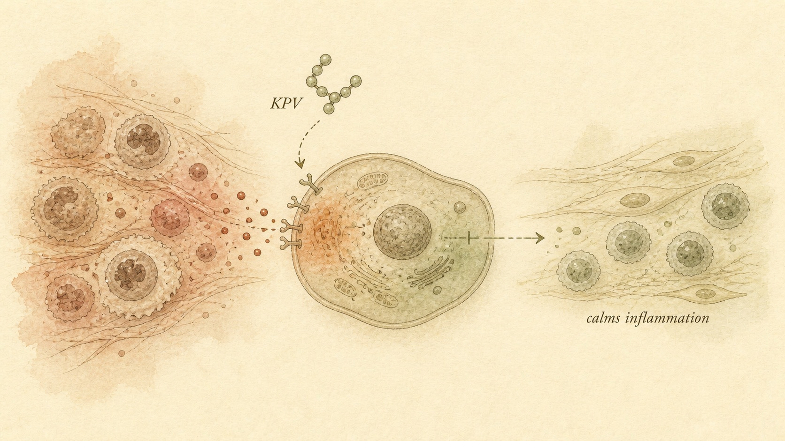
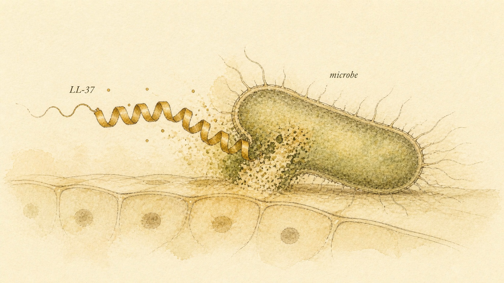

The Double-Edged Defenders
KPV quiets an inflammatory signal from inside the cell while LL-37 stands guard on the body's surfaces and helps rebuild them, and both stories end with the same warning: a peptide the body already makes is not automatically a gentle one to add more of.
Tomasz is 41 and works as a physiotherapy technician at a sports medicine clinic, close enough to real clinical conversation to have picked up a decent vocabulary of anatomy and healing timelines, but with no prescribing authority and no formal biochemistry training. Over the past year he has been reading two online communities that, on the surface, seemed to be talking about completely different things. The first was a gut-health forum where people described a peptide called KPV as a gentle, almost boring option, something you might add to a broader anti-inflammatory routine because it "calms things down" without the drama of a stronger drug. The second was a biohacking forum where people described a peptide called LL-37 in much more dramatic terms, an injectable "immune peptide" some members used when they felt a cold coming on, or wanted a surgical incision or a bad blister to close faster. Both communities, notably, used the exact same reassurance to justify using either compound: it is natural, your body already makes this molecule, you are not introducing anything foreign.
That single word, natural, is doing an enormous amount of unexamined work in both communities, and untangling it is most of what this chapter is for. KPV and LL-37 are grouped together in this course not because they are structurally related, they are not, but because they sit on either side of a genuinely blurry line that runs through the entire field of host defense biology: the line between calming inflammation down and actively fighting a microbial threat. Inflammation and infection control are not separate systems your body maintains in isolation, they are two tightly coupled responses to the same underlying question, is something here that should not be, and an honest look at either peptide requires understanding how that coupling works, where it is genuinely protective, and where it can misfire.
This chapter builds that understanding in four moves. First, we place KPV and LL-37 inside their actual biological families, a hormone fragment and a host-defense peptide, so that "immune-related peptide" stops being one vague bucket. Second, we go inside each mechanism in enough detail to see exactly what each molecule does at a cellular level, KPV's quiet interference with a specific inflammatory signaling pathway, and LL-37's much more physically aggressive assault on microbial membranes paired with a wide-reaching immune-signaling role. Third, we grade the evidence for each compound's claimed uses honestly and separately, because "extensively studied" and "proven safe to inject for this purpose" turn out to be very different claims for both molecules. Fourth, we return to Tomasz, walk through exactly where his natural-therefore-gentle reasoning broke down for each peptide, and close with the boundary this entire course keeps returning to: understanding a mechanism is not the same thing as a green light to use it.
One more framing point is worth stating before the biology starts, because it will keep the rest of this chapter from collapsing into a single simple lesson. It would be tidy to conclude that KPV is "the safe one" because its job is to calm things down, and LL-37 is "the risky one" because it is a more aggressive, receptor-heavy molecule with a documented disease link. That tidy conclusion does not survive contact with the actual evidence. KPV's own evidence base is thin specifically because it has barely been tested in humans at all, not because anything about its mechanism looks dangerous. LL-37's disease associations are documented precisely because it has been studied so extensively, in exactly the tissues where things can go wrong. Evidence depth and safety are not the same axis, and this chapter treats them separately throughout.
Two families, one blurred border
Start with what KPV actually is, structurally, because the name gives almost no clue. KPV is the common shorthand for the tripeptide lysine-proline-valine, three amino acids in that order, and it is not a synthetic invention. It is the exact C-terminal, meaning tail-end, three-amino-acid fragment of a much larger and much older hormone called alpha-melanocyte-stimulating hormone (alpha-MSH), a thirteen-amino-acid peptide that your pituitary gland and skin cells produce from a large precursor protein called proopiomelanocortin. Alpha-MSH is best known outside this course for its role in skin pigmentation, stimulating melanocytes to produce more melanin, which is the pathway a separate family of melanocortin peptides, covered in a later chapter of this course, exploits deliberately for tanning and libido effects. But pigmentation is only one branch of what alpha-MSH does. According to Brzoska et al. (2008), alpha-MSH is also one of the most potent naturally occurring anti-inflammatory mediators identified in vertebrate biology, acting on immune cells and non-immune tissue throughout the body, and remarkably, its C-terminal tripeptide KPV carries forward almost all of that anti-inflammatory capacity on its own, in a three-amino-acid package small enough to be manufactured cheaply and delivered locally.
LL-37 comes from an entirely different biological lineage. It is the mature, active form of the only cathelicidin antimicrobial peptide the human body produces, cathelicidins being a family of host-defense peptides found across mammals that function as a chemical first line of defense against invading microorganisms, distinct from the antibody-based adaptive immune system you likely learned about in a general biology course. The human cathelicidin gene, called CAMP, encodes a much larger precursor protein, human cationic antimicrobial protein 18 (hCAP-18), which is stored inside the granules of neutrophils, a type of white blood cell, and produced by epithelial cells lining the skin, gut, lungs, and other body surfaces. When hCAP-18 is enzymatically cleaved, most commonly by an enzyme called proteinase 3, it releases the active thirty-seven-amino-acid fragment that begins with two leucine residues, which is where the name LL-37 comes from. Unlike KPV, LL-37 is not a fragment of a hormone. It is the working, weaponized end product of a dedicated antimicrobial defense system, present at the body's actual physical borders, skin, gut lining, respiratory tract, ready to be deployed the moment a barrier is breached.
Here is where the two families genuinely do converge, and it is worth sitting with because it is the entire reason this chapter treats them together rather than in separate modules. Inflammation exists, evolutionarily, largely to fight infection and to clean up and rebuild tissue after an injury or a microbial encounter. A molecule that dials inflammatory signaling down, like KPV, is not acting in some unrelated corner of biology from a molecule that physically kills microbes and recruits immune cells to a wound, like LL-37. They are both operating on the same underlying problem, tissue that has been damaged or invaded and needs to be defended, cleaned up, and rebuilt, from two different directions. KPV works from the inflammation-control side, LL-37 works from the direct-defense-and-repair side, and, as later sections of this chapter make clear, LL-37 in particular does not stay neatly on one side of that line. Understanding both peptides side by side is what actually clarifies each one, far more than studying either in isolation.
The research histories behind these two peptides also help explain why one shows up mostly in gut and skin inflammation discussions while the other shows up mostly in infection and wound-care discussions. Alpha-MSH's anti-inflammatory properties, and by extension KPV's, were characterized gradually across the 1990s and 2000s by a research group built largely around Thomas Luger and Thomas Brzoska, working from the observation that a hormone already known for pigmentation also seemed to calm inflamed tissue in a wide range of animal models, fever, contact dermatitis, arthritis, allergic airway disease, well before anyone had fully worked out why. LL-37, and the broader cathelicidin family it belongs to, entered the literature from a completely different direction, immunology and infectious disease research in the 1990s identifying the human cathelicidin gene and characterizing its cleaved product as a genuine front-line antimicrobial agent, with the disease-association literature Kahlenberg and Kaplan (2013) later synthesized building on top of that antimicrobial foundation only once researchers noticed the peptide showing up in unexpected, and unwanted, places. Two different research traditions, converging on the same underlying question this chapter opened with: where does defending tissue end and damaging it begin.
KPV: the tripeptide that argues with NF-kB
The single most important fact about how KPV works, and the fact that most forum discussions of it skip entirely, is that it does not need to bind a melanocortin receptor to do its job. Alpha-MSH, its parent hormone, produces most of its effects, pigmentation included, by binding a family of five G protein-coupled melanocortin receptors (MC1R through MC5R) distributed across skin, immune cells, and the central nervous system. KPV, the tripeptide clipped from alpha-MSH's tail end, lacks the structural motif required to bind any of those five receptors with meaningful affinity. And yet, according to Brzoska et al. (2010), KPV retains almost all of alpha-MSH's anti-inflammatory capacity while displaying essentially none of its pigmentary action, a genuinely unusual pharmacological split that researchers have been trying to explain mechanistically for more than two decades. The working model, described across multiple reviews from the same research group, is that KPV acts through a melanocortin-receptor-independent pathway, likely by entering cells directly and interfering with intracellular inflammatory signaling machinery rather than triggering a cell-surface receptor cascade the way its parent hormone does.
The specific signaling machinery KPV appears to interfere with is a transcription factor called nuclear factor kappa B (NF-kB), one of the most central master switches in the entire inflammatory response. In a resting cell, NF-kB is held inactive in the cytoplasm, bound to an inhibitory protein. When a cell detects a threat signal, a bacterial component, a cytokine, tissue damage, an enzyme cascade releases NF-kB from its inhibitor, and NF-kB translocates into the nucleus, where it binds DNA and switches on the transcription of a long list of pro-inflammatory genes, including tumor necrosis factor-alpha (TNF-alpha), interleukin-1beta (IL-1beta), interleukin-6 (IL-6), and various adhesion molecules that recruit more immune cells to the site. According to Luger and Brzoska (2007), alpha-MSH and its related tripeptides, KPV foremost among them, act at exactly this checkpoint, blunting NF-kB activation and, downstream of that, reducing the production of the pro-inflammatory cytokines NF-kB would otherwise switch on. The practical effect, observed across a wide range of animal models of inflammation, is a dampened inflammatory response without KPV itself functioning as a broad immune suppressant in the way a systemic steroid does.
It is worth being precise about what "melanocortin-independent" does and does not mean here, because it is easy to overstate. The broader alpha-MSH and related-tripeptide research program, reviewed comprehensively by Brzoska et al. (2008), documents alpha-MSH's own anti-inflammatory effects working substantially through melanocortin receptor 1 (MC1R) on immune cells such as monocytes, macrophages, and dendritic cells, downregulating their production of inflammatory cytokines while upregulating the anti-inflammatory cytokine interleukin-10 (IL-10). KPV's contribution sits alongside that receptor-mediated story rather than replacing it entirely, an independent, intracellular route to a similar endpoint, NF-kB suppression, that does not require the melanocortin receptor engagement its parent molecule relies on. That distinction matters practically because it is exactly what lets KPV be studied and marketed separately from pigmentation-affecting melanocortin peptides. It also matters for the honesty of this chapter, because the mechanism, while genuinely described across a substantial peer-reviewed literature, has never been fully resolved down to a single named intracellular receptor or transporter for KPV the way, for example, the androgen receptor is resolved for testosterone in an earlier course in this catalog. The pathway is real and repeatedly observed. The complete molecular explanation for how a three-amino-acid peptide gets inside a cell and interferes with NF-kB signaling is still, honestly, an area of active investigation.

What KPV is claimed for, and how strong that evidence actually is
KPV shows up in two overlapping but distinct contexts, and it is worth naming both plainly, in line with this course's practice of stating intended or claimed use next to mechanism and evidence grade rather than leaving it implied. The first context is gut inflammation. The claimed use is calming inflammatory bowel activity, by way of the NF-kB-suppressing mechanism described above, reducing local production of the pro-inflammatory cytokines that drive tissue damage in conditions like inflammatory bowel disease. The second context is skin, where KPV appears as one ingredient inside cosmetic and grey-market injectable combinations, most visibly a peptide blend sometimes marketed under the name "KLOW," typically combining KPV with GHK-Cu (the copper tripeptide covered in the previous chapter of this course), BPC-157, and thymosin beta-4 (TB-500), marketed collectively for skin healing and a smoother, calmer complexion. In that blend, KPV's role is specifically anti-inflammatory, quieting local irritation and redness, a genuinely different job from GHK-Cu's collagen-signaling role sitting right next to it in the same vial.
The gut evidence is the more developed of the two, and it is worth walking through directly. According to Laroui et al. (2009), researchers engineered nanoparticles loaded with KPV and encapsulated them in a polysaccharide hydrogel designed to survive transit through the stomach and release its contents specifically in the colon. In a mouse model of colitis induced by dextran sodium sulfate (DSS), a chemical that damages the intestinal lining and triggers an inflammatory bowel response used routinely to model human inflammatory bowel disease in animals, mice treated with the KPV-loaded, colon-targeted nanoparticles showed measurably reduced inflammatory and histologic damage compared to mice given the DSS insult alone. Notably, the same study found that this targeted nanoparticle delivery let researchers use a KPV concentration roughly twelve thousand times lower than the concentration required to achieve a similar effect with KPV in free, unencapsulated solution, a finding that says as much about the importance of delivery method as it does about the peptide's inherent potency. That is a genuinely striking piece of animal-model evidence, and it is also, worth stating plainly, a mouse study using a specialized nanoparticle delivery system, not a human clinical trial, and not a demonstration that a plain injected or orally taken dose of KPV produces the same effect in a person with inflammatory bowel disease.
Zoom out from that one study and the broader picture for KPV holds together: strong, repeatedly demonstrated mechanistic plausibility, a genuinely large body of alpha-MSH and related-tripeptide literature going back over two decades, and multiple animal models across gut, skin, eye, and airway inflammation showing consistent anti-inflammatory effects, as summarized by Luger and Brzoska (2007) and by Brzoska et al. (2010). What is largely missing, as of this writing, is controlled human clinical trial data establishing a safe and effective dose, route, and duration of KPV use for any specific human inflammatory condition. The evidence grade for KPV, stated honestly, is preclinical and mechanistic: strong enough that a research group would have good reason to pursue human trials, not strong enough to treat any current human use, gut-directed or cosmetic, as an established, dose-validated therapy. The cosmetic combinations circulating under names like KLOW carry an additional layer of uncertainty on top of that, because even where an individual ingredient's mechanism is well characterized, the specific blended product, its exact ratios, its purity, and its actual effect when combined, is essentially untested as a product in its own right.
It is worth placing this in context against the broader melanocortin field, because that context is exactly what a skeptical reader should ask for. The melanocortin receptor system that alpha-MSH itself signals through is not a purely theoretical target, it underlies at least one approved human therapy, an implantable melanocortin receptor agonist used for a rare photosensitivity condition, which shows the receptor family is druggable in principle and that melanocortin biology can clear the bar of a regulatory approval when the evidence is built out properly. KPV has not walked that same path. It bypasses the melanocortin receptors entirely, works through a still only partly resolved intracellular route, and, unlike the approved melanocortin drug, has no equivalent human trial program behind its anti-inflammatory claims specifically. The existence of one approved melanocortin-pathway drug says the underlying biological territory is real and pharmaceutically workable. It says nothing at all about whether KPV, specifically, at any given dose or route, has cleared that same bar, because it has not.
LL-37: the cathelicidin that patrols the body's surfaces
Where KPV is a quiet intracellular signal, LL-37 is, structurally and functionally, built to be aggressive. The mature peptide is thirty-seven amino acids long, considerably larger than KPV's three, and it folds into an amphipathic alpha-helix, meaning one face of the helix is lined with positively charged and hydrophilic amino acids while the opposite face is lined with hydrophobic ones. That structural split is the entire key to how LL-37 kills microbes. Bacterial cell membranes are, on their outer surface, negatively charged, in contrast to the largely neutral outer surface of human cell membranes, and LL-37's positively charged face is drawn electrostatically to that negatively charged bacterial surface. Once docked, the peptide's hydrophobic face inserts directly into the lipid membrane, and at sufficient concentration, multiple LL-37 molecules aggregate within the membrane to form pores, or to disrupt the membrane's structural integrity broadly enough that it can no longer hold the microbial cell together, a mechanism generally described using a carpet or pore-forming model. According to Vandamme et al. (2012), this same physical mechanism gives LL-37 activity against a genuinely broad range of targets, gram-positive and gram-negative bacteria, fungi, and some enveloped viruses, because the underlying vulnerability, a negatively charged, disruptable lipid membrane, is shared across many microorganisms in a way human cell membranes largely are not.
Direct membrane disruption is only half of what LL-37 does, and treating it as a simple antibiotic peptide badly undersells its biology. Vandamme et al. (2012) describe LL-37 as a genuinely pleiotropic molecule, meaning it produces many distinct effects through many distinct pathways beyond its membrane-disrupting core function. LL-37 acts as a chemoattractant, drawing neutrophils, monocytes, T cells, and mast cells toward a site of infection or injury, in part by engaging a cell-surface receptor called formyl peptide receptor 2 (FPR2) found on many immune cells. It modulates the release of cytokines and chemokines from immune cells, influences apoptosis, meaning programmed cell death, in a context-dependent way, and, notably, promotes angiogenesis, the growth of new blood vessels, and stimulates keratinocyte, the main structural cell type of the skin's outer layer, migration, both of which are directly relevant to wound healing rather than to killing microbes at all. This is precisely why LL-37 gets described in the biohacking communities Tomasz was reading as both an antimicrobial and a healing peptide, it genuinely is both, through mechanisms that are only partly overlapping.
It is also worth being precise about where LL-37 comes from and how tightly its production is controlled in a healthy body, because that context matters directly for the next section's discussion of what happens when the control breaks down. LL-37 is not secreted continuously at a constant level. Its precursor, hCAP-18, is stored inside neutrophil granules and in the keratinocytes and other epithelial cells that line the body's exposed surfaces, and it is released and cleaved into active LL-37 in response to specific triggers, infection, injury, inflammation, or exposure to vitamin D, which upregulates cathelicidin gene expression in several tissue types. This is a tightly regulated, situational defense system, deployed where and when it is needed, rather than a peptide circulating freely at a fixed baseline the way many circulating hormones do.
"Not only do they possess an antibacterial, antifungal and antiviral function, they also show a chemotactic and immunostimulatory/-modulatory effect. Moreover, they are capable of inducing wound healing, angiogenesis and modulating apoptosis."
Dieter Vandamme et al., Cellular Immunology (2012)
That single sentence, describing cathelicidins as a class, is the most concise possible summary of why LL-37 resists being filed under one tidy label. A learner reading a forum post that calls LL-37 simply "the immune peptide" or simply "the wound peptide" is reading a description that captures maybe a third of what the actual research literature documents, and the missing two-thirds are exactly what the next section covers.

Healer and provocateur: LL-37's double edge
LL-37's wound-healing role is genuinely well documented and is exactly what draws people toward using it, or a claimed version of it, for faster recovery after a cut, a blister, or a minor procedure. Beyond direct microbial killing at a wound site, keeping infection from taking hold in damaged tissue in the first place, LL-37 promotes angiogenesis and keratinocyte migration, both necessary steps in normal wound closure, and it participates in orchestrating the broader inflammatory-to-repair transition a healing wound has to move through. According to Vandamme et al. (2012), this combination of direct antimicrobial action and active participation in tissue repair is precisely what makes cathelicidin biology so central to skin and mucosal health under normal conditions.
The same properties that make LL-37 protective under normal conditions are implicated, when regulation breaks down, in some of the more stubborn inflammatory skin and systemic diseases in modern medicine, and this is the honest caution this section exists to deliver plainly. According to Kahlenberg and Kaplan (2013), LL-37 has a well-documented role in the pathogenesis of psoriasis, where LL-37 released in excess by damaged or stressed skin cells can bind to the body's own DNA and RNA, released from dying cells, forming a complex that the immune system's pattern-recognition receptors were never designed to encounter this way. That LL-37, self-DNA complex is taken up by plasmacytoid dendritic cells, a specialized immune cell type, and triggers a strong type I interferon response, a signaling cascade that, in a healthy antiviral context, helps fight actual viral infection, but in psoriatic skin instead drives a self-sustaining inflammatory loop that contributes directly to the disease's hallmark skin lesions. Kahlenberg and Kaplan (2013) extend this same LL-37-driven mechanism to a broader set of autoimmune and inflammatory conditions, including atopic dermatitis, systemic lupus erythematosus, rheumatoid arthritis, and atherosclerosis, describing LL-37 dysregulation as a genuinely recurring theme across conditions that, on the surface, look unrelated to each other.
Put plainly, the same molecule responsible for defending skin and helping it heal is, in several well-studied disease states, implicated as part of what keeps that skin inflamed. This is not a minor asterisk on LL-37's biology, it is close to the central fact any honest account of the peptide has to lead with. It means LL-37's relationship to inflammatory skin disease is not simply "too little LL-37 causes disease" or "too much LL-37 causes disease," both directions show up in the literature depending on the tissue and the specific condition, which is exactly why researchers describe cathelicidin biology as a double-edged system rather than a straightforwardly protective one. Adding exogenous LL-37 into that already-delicate balance, without the tissue-level and dose-level precision that comes from actual clinical trial data, is not a small, low-stakes decision, even though the peptide is, in its natural form, already present in the body.
Case study: Tomasz and the natural-therefore-gentle mistake
Running Tomasz's assumptions back through this chapter resolves four separate confusions, and each resolution follows directly from the mechanism sections above rather than from any general caution about grey-market peptides as a category. His first assumption was that "natural, the body already makes this" was, on its own, meaningful evidence of gentleness or safety. The double-edge sections of this chapter directly contradict that. LL-37 is entirely endogenous, produced by the same immune system Tomasz was hoping to support, and it is simultaneously implicated in driving psoriasis, systemic lupus erythematosus, and other inflammatory disease when its release is not tightly regulated by the body's own control systems. Being endogenous describes where a molecule comes from. It says nothing at all about whether adding more of it, outside the body's normal regulatory context, is safe.
His second assumption was that KPV and LL-37 were doing roughly the same kind of "immune support" job, just in different tissues, gut versus skin or blood. The mechanism sections correct that directly. KPV works from inside the cell, quietly turning down a specific inflammatory signaling checkpoint, NF-kB, without needing a cell-surface receptor. LL-37 works largely from outside the cell, physically tearing into microbial membranes, while separately orchestrating a wide immune-signaling and wound-repair response through entirely different pathways. They sit on functionally opposite sides of the inflammation-versus-defense spectrum described at the start of this chapter, not on the same side described in two different vocabularies.
His third assumption concerned the KLOW-style skin combination he had read about, where he had assumed KPV's presence in a "skin-repair" blend meant it worked the same way as the collagen-building copper peptide, GHK-Cu, sitting alongside it. The KPV evidence section corrects that: KPV's role in that blend is specifically anti-inflammatory, calming irritation through NF-kB suppression, a mechanistically distinct job from GHK-Cu's matrix-remodeling, collagen-synthesis role covered in the previous chapter. Two peptides in the same vial marketed toward the same general goal, smoother, calmer skin, can still be doing biologically unrelated jobs.
His fourth and most consequential assumption was that injecting LL-37 to "boost immunity" against a cold, or to speed healing after a minor procedure, was low risk specifically because it mimicked something the body does naturally. This chapter's double-edge section is the direct correction. There is no published human clinical trial establishing a safe, effective dose of exogenous LL-37 for either of those purposes, and the same molecule's documented role in driving disease when dysregulated is precisely the reason that absence of trial data should be taken seriously rather than waved away, not the reason to dismiss the concern as overcautious. A cold is a viral, self-limited illness in the vast majority of healthy adults, and speeding a minor wound's closure is a genuinely low-stakes goal to begin with, which makes the actual proportional risk of introducing an unregulated dose of a peptide with a documented autoimmune disease association even harder to justify against the modest benefit being chased.
What Tomasz walked away with was not a verdict on whether either peptide has genuine promise, both plausibly do, within a much narrower and more carefully governed context than a self-administered vial. He walked away with the actual question worth asking about any peptide the body already makes: not "is this natural," but "who is controlling the dose, the timing, and the tissue here, and is that control anything like what my own body already does automatically." That question travelled back with him into the conversation about his family member's inflammatory bowel flare-up too. It reframed his instinct to research a peptide fix into a more useful instinct, understanding the biology well enough to ask his family member's gastroenterologist sharper, better-informed questions, rather than a plan to source anything himself.
Where this course stops: understanding is not permission
Everything in this chapter, KPV's melanocortin-independent suppression of NF-kB, the Hershberger-style precision of the DSS colitis nanoparticle data, LL-37's amphipathic membrane-disrupting structure, its chemoattractant and wound-healing functions, and its documented role in autoimmune and inflammatory disease when dysregulated, is true independent of whether any individual reading it ever uses either compound. That is the entire point of teaching mechanism this thoroughly: understanding how a peptide actually works, and how honestly graded the evidence behind its claimed uses actually is, has value on its own, whether the person doing the learning is evaluating a claim made by a friend, a forum post, a vendor, or their own curiosity.
This chapter has been explicit throughout about what is established and what is not. KPV's gut-inflammation evidence is real but confined almost entirely to animal models, with a specific and genuinely clever nanoparticle delivery study standing as the strongest single piece of data behind it. LL-37's biology, its structure, its membrane-disrupting mechanism, its immune-signaling roles, and its documented double edge in disease, is about as thoroughly characterized as any human host-defense peptide in the literature, and that thoroughness is precisely what makes its unproven, self-administered, grey-market injectable use a genuinely different and more serious question than the underlying biology alone would suggest. Neither compound has the kind of controlled human clinical trial data that would let anyone, this course included, describe a specific dose or protocol as established or safe, and this course will not provide one, for either peptide, regardless of how much mechanism has just been covered.
For a learner in Tomasz's position, or in the position of the family member whose flare-up started his research in the first place, this boundary is not a disappointing place for the chapter to end, it is the most useful thing the chapter can hand over. Inflammatory bowel conditions, autoimmune skin disease, and recurrent infection are all situations that call for an actual diagnostic workup and a treatment plan built by a clinician who can see bloodwork, imaging, and a full history, not a peptide sourced from a forum recommendation, however mechanistically plausible that peptide's story sounds after a chapter like this one. What this chapter can responsibly leave a learner with is exactly what it built across every section: the ability to separate a real, well-documented mechanism from a proven, dosed, human-tested therapy, to recognize when "the body already makes this" is being used as a substitute for actual safety data rather than evidence of it, and to know precisely where curiosity needs to hand off to a clinician instead of a vial.
Key Takeaways
- KPV is the C-terminal tripeptide of alpha-melanocyte-stimulating hormone (alpha-MSH). It retains almost all of its parent hormone's anti-inflammatory activity without binding the melanocortin receptors responsible for pigmentation, acting instead through a melanocortin-independent route that suppresses nuclear factor kappa B (NF-kB) activation and downstream pro-inflammatory cytokine production.
- KPV's intended uses, gut inflammation and inclusion in skin-healing cosmetic blends such as KLOW-type combinations, rest on strong mechanistic plausibility and consistent animal-model data, most notably a colon-targeted nanoparticle study in a mouse colitis model, but lack controlled human clinical trial evidence establishing a safe, effective dose.
- LL-37 is the mature, active form of the human cathelicidin antimicrobial peptide, cleaved from its precursor hCAP-18. Its amphipathic alpha-helix structure lets it physically disrupt negatively charged microbial membranes, killing bacteria, fungi, and some enveloped viruses, while separate pathways let it act as a chemoattractant, cytokine modulator, and driver of angiogenesis and keratinocyte migration in wound healing.
- LL-37 is genuinely double-edged. The same peptide that defends and helps heal the body's surfaces is, when dysregulated, implicated in driving psoriasis, systemic lupus erythematosus, atopic dermatitis, rheumatoid arthritis, and atherosclerosis, in part through complexes it forms with the body's own DNA and RNA that trigger an inappropriate interferon response.
- "The body already makes this molecule" is not evidence of safety at any dose or route. Both KPV and LL-37 are endogenous, tightly regulated signals, and grey-market injectable use of either one, unproven in controlled human trials, removes exactly the dose, timing, and tissue-level control that keeps their natural biology protective rather than harmful.
- This course is education and harm reduction, not a protocol source. Understanding mechanism and evidence grade is valuable on its own and does not replace the judgment of a licensed clinician for any individual health decision.
KPV and LL-37 both touch the immune system without being immune modulators in the strict sense, KPV dampens one inflammatory checkpoint, LL-37 fights and signals at the body's surfaces. Chapter 5 turns to peptides built specifically to modulate immune function itself, thymosin alpha-1, thymulin, and thymalin, compounds with a genuine approved-elsewhere history in some regions, and it will draw a careful distinction this course has flagged before: thymosin alpha-1's immune-modulating role is a fundamentally different biology from thymosin beta-4, covered in Chapter 2, despite the similar name.
References
Brzoska, T., Böhm, M., Lügering, A., Loser, K., & Luger, T. A. (2010). Terminal signal: anti-inflammatory effects of alpha-melanocyte-stimulating hormone related peptides beyond the pharmacophore. Advances in Experimental Medicine and Biology, 681, 107-116. https://doi.org/10.1007/978-1-4419-6354-3_8
Brzoska, T., Luger, T. A., Maaser, C., Abels, C., & Böhm, M. (2008). Alpha-melanocyte-stimulating hormone and related tripeptides: biochemistry, antiinflammatory and protective effects in vitro and in vivo, and future perspectives for the treatment of immune-mediated inflammatory diseases. Endocrine Reviews, 29(5), 581-602. https://doi.org/10.1210/er.2007-0027
Cutuli, M., Cristiani, S., Lipton, J. M., & Catania, A. (2000). Antimicrobial effects of alpha-MSH peptides. Journal of Leukocyte Biology, 67(2), 233-239. https://doi.org/10.1002/jlb.67.2.233
Kahlenberg, J. M., & Kaplan, M. J. (2013). Little peptide, big effects: the role of LL-37 in inflammation and autoimmune disease. Journal of Immunology, 191(10), 4895-4901. https://doi.org/10.4049/jimmunol.1302005
Laroui, H., Dalmasso, G., Nguyen, H. T. T., Yan, Y., Sitaraman, S. V., & Merlin, D. (2009). Drug-loaded nanoparticles targeted to the colon with polysaccharide hydrogel reduce colitis in a mouse model. Gastroenterology, 138(3), 843-853. https://doi.org/10.1053/j.gastro.2009.11.003
Luger, T. A., & Brzoska, T. (2007). alpha-MSH related peptides: a new class of anti-inflammatory and immunomodulating drugs. Annals of the Rheumatic Diseases, 66(Suppl 3), iii52-iii55. https://doi.org/10.1136/ard.2007.079780
Luger, T. A., Scholzen, T. E., Brzoska, T., & Böhm, M. (2003). New insights into the functions of alpha-MSH and related peptides in the immune system. Annals of the New York Academy of Sciences, 994, 133-140. https://doi.org/10.1111/j.1749-6632.2003.tb03172.x
Vandamme, D., Landuyt, B., Luyten, W., & Schoofs, L. (2012). A comprehensive summary of LL-37, the factotum human cathelicidin peptide. Cellular Immunology, 280(1), 22-35. https://doi.org/10.1016/j.cellimm.2012.11.009